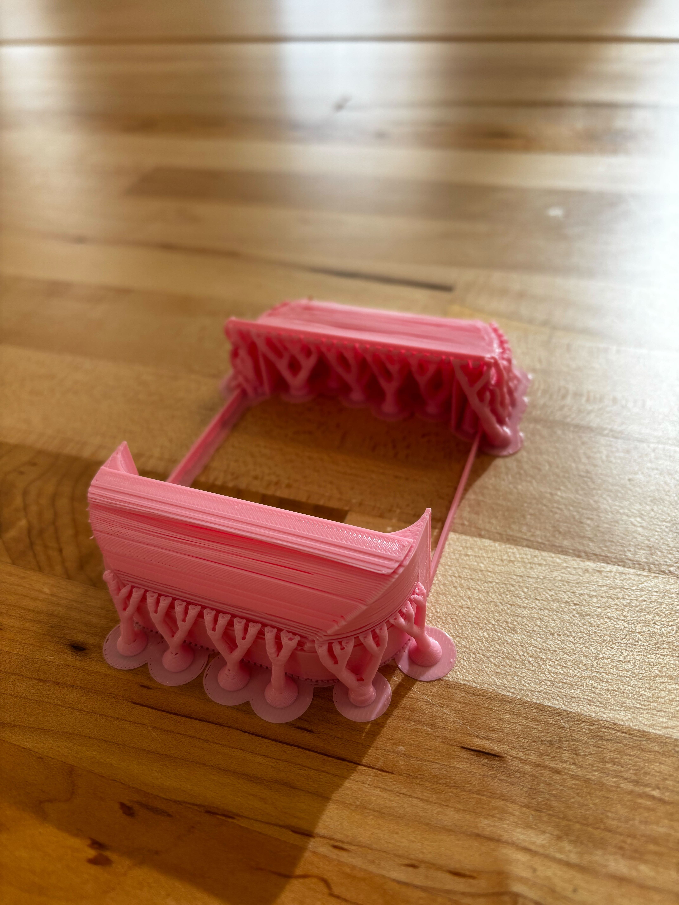
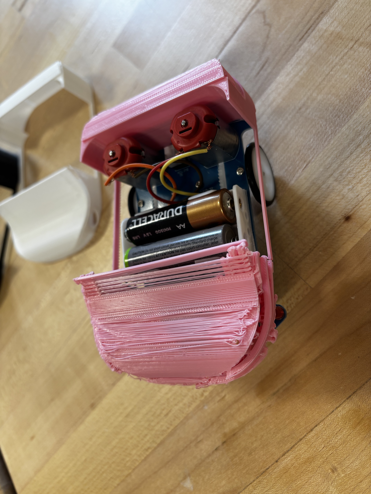
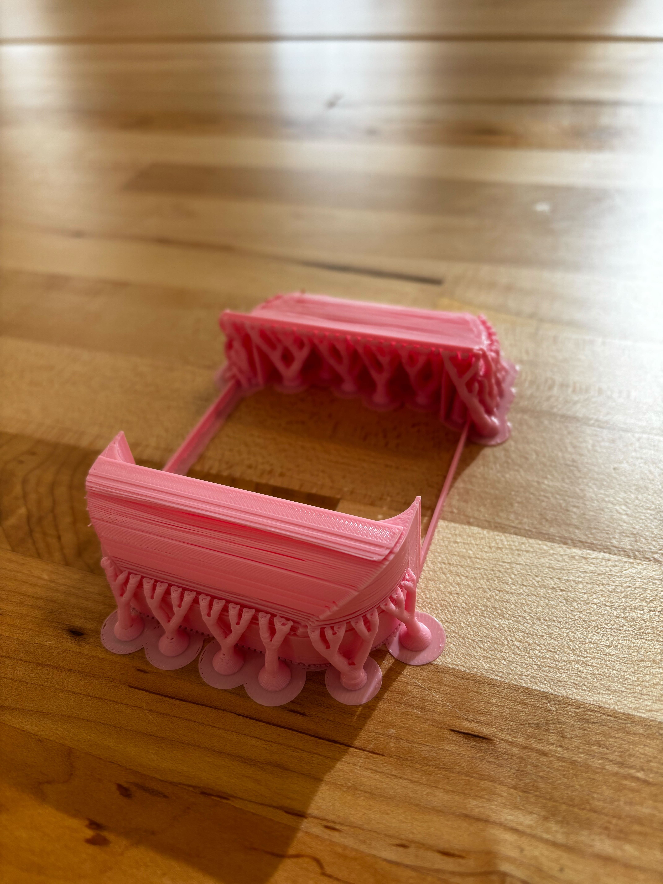
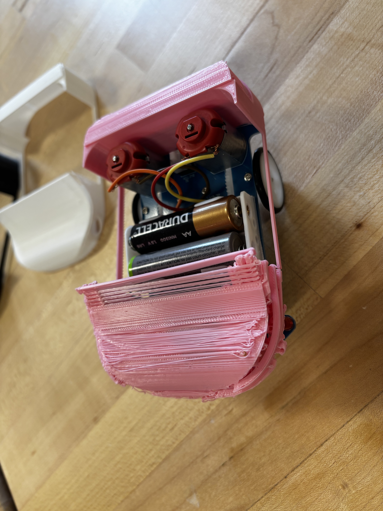

Project 3

Building the kit:
Starting off with the third project of the class I learned a new skill which was soldering. For this project my partner and I were tasked to build a smart tracking car kit. We had to solder wires, lights, resistors, capacitors, and many more. To solder you want to cover the tip of the soldering iron with solder then melt the solder wire with the solder iron onto the circuit board and you don’t want to put the tip on the circuit board for too long or else it can burn it. I thought that building the kit went very smoothly. There were some steps that we had to double check a few times before we soldered it down. I learned that to differentiate which side is the positive or negative side you had to look at which side of the wire is longer. The longer side is the positive side.
Also we made sure we put the right resistor in the right spot by looking at the color stripes on it. After finishing the build we did some minor adjustments to the gears because sometimes it wasn’t touching the worm on the motor shaft. So we tried to bend the shaft towards the gear and adjusted the gear to be in the center of the worm so the worm can spin the gear most of the time. We also played around with the potentiometer, we figured out if we turn both potentiometers to the right it was going rocking left and right at a slower interval and if we turn both to the left it did not bother to follow the black line and just kept going forward. So in the end we turned both of the potentiometers around 45° to the right for the right one and left for the left one. This made the car rock at a faster interval while also following the black line. I notice that it is only a right wheel drive and when it needs to adjust it will use the left wheel to turn it back on course, that's why it rocks left and right when it drives because it's constantly adjusting itself.
Designing a chassis enclosure:
After finishing the kit we started to brainstorm what type of chassis will fit on our kit. It needed a fit on the kit while having room for the wheels to move, not blocking any sensors for lights, having easy access to the batteries, and the on-off button. The first thing that came into mind was designing a car chassis, more specifically a convertible style chassis. The open roof will give easy access to the batteries and the on-off button. Also with car-like features it will have space for the wheels to move and lights to show.
Our next step was to measure the whole car. We used a calibrator to get specific measurements. We did run into trouble with trying to make a collaborative space where my partner and I can design the chassis in the same space on Fusion. So while trying to solve this problem my partner created a 2D sketch of how the chassis is going to be laid out by using the sketch line feature on Fusion. Then used the extrude feature to create the walls of the chassis. I did add to the design but in the end my partner could not see my changes which in the end led to my partner building up the chassis while I gave some ideas and changes to our design. Later on we figured out that we can make a folder and share it to each other but we still couldn’t make changes on each other’s designs. After finishing the 3D model of the chassis on Fusion we download it as a stl file so we can upload it on to Prusa Slicer.


Measurements:
- Length: 103.79mm
- Width Head: 72.13mm
- Width Back 69.69mm
- Width body 57.91mm
- Height of the bot 53.98mm
- Height of the front 34.09mm
- Height of the light 11.16mm - diameter of the tunnel but have to be larger
- Front lid have to be at least 14.04mm high
- From front to battery 40mm
- Length of the tunnel 18.5mm
- Battery height 19mm
- Height of the motors 28.54mm
- Battery to the end 38.45mm
- Switch 8.39mmlength *8.5mmwidth
- Diameter of the wheel 28.19mm
- Wheel center to the battery 7.1mm


 


